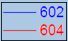

FAQ-726 Wie bewirke ich, dass die Legendentextfarbe der Legendsymbolfarbe entspricht?
same-text-and-symbol-color-in-legend
Es gibt zwei Methoden, mit denen die Legendentextfarbe auf die Legendensymbolfarbe abgestimmt werden kann.
- 
- Klicken Sie mit der rechten Maustaste auf das Legendenobjekt und wählen Sie Legende: Textfarbe folgt Zeichnung.
- Setzen Sie die Schriftfarbe auf der Symbolleiste Format auf Auto oder klicken Sie mit der rechten Maustaste auf die Legende, um Einstellungen im Kontextmenü auszuwählen und die Farbe im Dialog Objekteigenschaften auf der Registerkarte Text mit Auto festzulegen.
Origin-Version mind. erforderlich: 2016 SR0
Schlüsselfarbe:Legendentextfarbe, Legendensymbolfarbe
Letztes Update: 22.09.2016